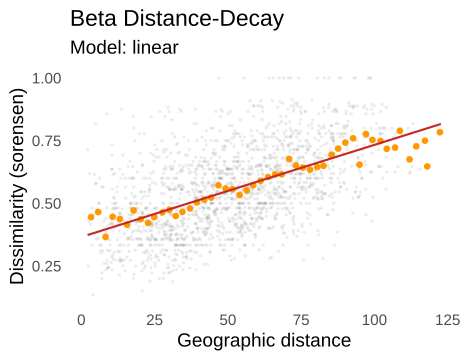
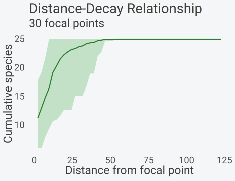
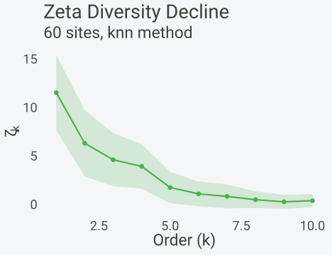
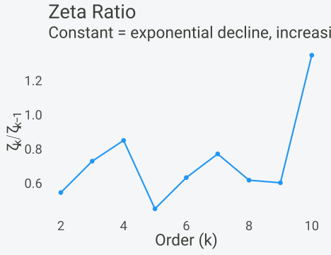
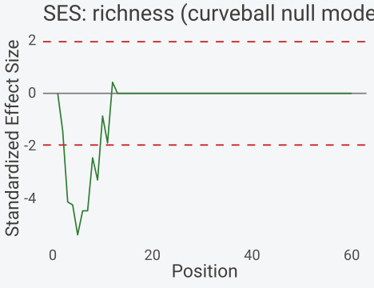
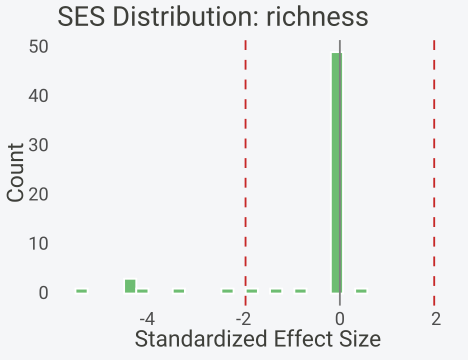

Community Assembly and Turnover
Gilles Colling
2026-10-10
Source:vignettes/community-assembly.Rmd
community-assembly.RmdInstallation
install.packages("spacc") # CRAN
install.packages("pak") # development version
pak::pak("gcol33/spacc")Introduction
A species list at a single site says little about how a community came to be. The signal lives in how composition shifts from one site to the next, and at what spatial scale that shift accelerates or stalls. Two regions can share an identical mean richness yet differ sharply in turnover: one a smooth gradient where neighbours resemble each other, the other a mosaic where adjacent plots hold almost disjoint species sets. Community assembly leaves its fingerprint in that spatial structure rather than in any single count.
Three questions organise the analysis. The first asks how fast
compositional similarity fades with geographic distance. The second asks
how the pool of shared species shrinks as more sites are compared at
once, and whether that shrinkage is gradual or abrupt. The third asks
whether the observed pattern departs from what a randomised community
would produce. spacc answers each with a dedicated
function: betaDecay() and distanceDecay() for
the first, zetaDiversity() for the second, and
ses() for the third. The functions return typed objects
with print(), summary(), plot(),
and as.data.frame() methods, so output can be inspected,
plotted, and extracted into a data frame for downstream modelling.
The three lenses each answer a different question. Distance-decay collapses the whole study region onto a single curve of dissimilarity against separation, which makes it sensitive to the dominant turnover scale but blind to whether that turnover is driven by common or rare species. Zeta diversity keeps the multi-site structure that pairwise measures discard, so it can separate the contribution of widespread generalists from that of narrow specialists, at the cost of needing more sites to sample higher orders reliably. Null models add the inferential layer the other two lack: they convert a descriptive curve into a test against an explicit counterfactual. Reading the same dataset through all three guards against the overinterpretation that any one curve invites.
This vignette walks through the three lenses on a single simulated dataset with known structure. Simulating the data fixes the ground truth: the strength of spatial aggregation is set by one parameter, so the analyses can be checked against an answer that is known in advance. Real survey data never come with such a guarantee, which is precisely why a controlled example is worth the detour. When a method recovers the planted signal, its output on a field dataset can be trusted to mean what it claims. The closing section gives concrete guidance on permutation counts, sample sizes, the choice of zeta order, and the situations where each lens misleads rather than informs.
The three lenses
Distance-decay
Distance-decay summarises how compositional similarity falls off with separation. Let \(S(d)\) denote the similarity of two assemblages \(d\) units apart. The classic form is exponential,
\[ S(d) = S_0 \, e^{-d/h}, \]
where \(S_0\) is similarity at zero
distance and \(h\) is the
half-distance scale, the distance over which similarity drops
by a factor of \(e\). A small \(h\) marks steep turnover; a large \(h\) marks a community that stays
compositionally coherent across the region. Working with dissimilarity
\(\beta = 1 - S\) instead, the
exponential model betaDecay() fits is
\[ \beta(d) = 1 - a \, e^{-b d}, \]
with the half-life reported as \(d_{1/2} = \ln(2)/b\), the distance at which the similarity component \(a\,e^{-bd}\) reaches half its initial value. The package also fits a power model \(\beta = a\,d^{b}\) and a linear model \(\beta = a + b d\), then selects among the three by AIC. Power decay implies scale-free turnover with no characteristic distance; linear decay is the least structured of the three and often wins when curvature is weak.
The choice of dissimilarity index shapes what the decay measures. Sorensen dissimilarity, the default, weights shared species twice in the denominator and so emphasises the species two assemblages have in common; Jaccard treats shared and unshared species symmetrically and reads as a stricter turnover measure. For a given pair of sites Sorensen never exceeds Jaccard, so a decay curve fitted to Jaccard sits higher and saturates sooner. Neither is correct in the abstract: the question is whether the analysis cares about the overlap between assemblages (Sorensen) or the fraction of the combined species pool they fail to share (Jaccard). The half-distance changes with the index, which is one more reason to report the index alongside any decay parameter.
Two mechanisms generate distance-decay, and the curve alone cannot tell them apart. The first is environmental: sites that are far apart tend to differ in climate, soil, or habitat, so their species differ because their conditions differ. The second is dispersal limitation: even under identical conditions, species fail to reach distant sites, so composition drifts with distance through spatial processes alone. Both produce a falling \(S(d)\), and separating them requires either environmental covariates or the kind of randomisation the null models below provide. The decay curve quantifies the pattern; it does not name the cause.
Zeta diversity
Zeta diversity counts shared species across more than two sites at once. For an order \(i\), \(\zeta_i\) is the mean number of species common to all \(i\) sites in a sampled set (Hui & McGeoch 2014). By construction \(\zeta_1\) is mean per-site richness, \(\zeta_2\) is the mean count of species shared by a pair, and \(\zeta_i\) declines monotonically as \(i\) grows. The shape of that decline carries the signal. The diagnostic is the ratio of successive orders,
\[ R_i = \frac{\zeta_i}{\zeta_{i-1}}. \]
A roughly constant ratio means \(\zeta_i\) follows a geometric (exponential) sequence, \(\zeta_i \propto c^{\,i}\), which arises when species occur independently with fixed probabilities. That is the signature of stochastic, dispersal-driven turnover. A ratio that climbs toward 1 with order means the decline is power-law, \(\zeta_i \propto i^{-\gamma}\), which a few widespread generalists produce when they persist across many sites while specialists drop out early. Power-law decline is read as evidence of niche-based, deterministic assembly. The contrast between the two regimes is the reason the ratio plot deserves as much attention as the decline curve.
The reason the ratio is more informative than the raw curve is that the absolute zeta values confound richness with turnover. A species-rich region and a species-poor region can share the same assembly mechanism yet show \(\zeta_i\) curves separated by a vertical shift, because \(\zeta_1\) alone differs. Dividing successive orders cancels that shift and isolates the rate of decline, which is the quantity assembly theory speaks to. A geometric sequence has the property that the ratio of consecutive terms is constant by definition; departures from a flat ratio are therefore departures from the independent-occurrence model, and the direction of the departure points to the mechanism.
The two regimes also differ in how they treat rarity. Under
exponential decline, rare species drop out of the shared set at the same
proportional rate as common ones, so no part of the species pool is
privileged. Under power-law decline, a small set of widespread species
dominates the high-order zeta values while the long tail of rare species
contributes only to \(\zeta_1\) and
\(\zeta_2\). The ecological reading
follows: power-law turnover implies a structured pool with clear winners
across the region, the kind of asymmetry that environmental filtering
and competitive sorting produce. Sampling knn
neighbourhoods rather than random sets sharpens the contrast, because
nearest neighbours share the local environment and any niche structure
surfaces at lower orders than under random sampling.
Standardised effect sizes
Raw turnover values cannot say whether a pattern is non-random on their own, because aggregation, richness gradients, and sampling all leave marks that mimic assembly. A null model strips out the targeted structure by randomising the species matrix while holding chosen features fixed, then measures how far the observed value sits from the randomised cloud. The standardised effect size is
\[ \mathrm{SES} = \frac{\text{obs} - \overline{\text{null}}}{\mathrm{sd}_{\text{null}}}, \]
the number of null standard deviations between the observed statistic
and the null mean. Under a two-tailed convention, \(|\mathrm{SES}| > 1.96\) flags a
departure at roughly the 5% level when the null distribution is
approximately normal. Positive SES on a richness accumulation curve
means more species accrue than the null predicts (spatial
overdispersion); negative SES means fewer accrue (clustering, or
redundant encounters of aggregated species). ses() also
returns a permutation p-value from the rank of the observed value among
the null draws, which does not lean on the normal approximation.
The choice of null model is the substance of the test, not a technical detail. A null randomises some features of the species matrix while pinning others, and the pinned features define the alternative the test cannot detect. Holding species frequencies fixed but shuffling their placement asks whether composition is spatially structured given those frequencies. Fixing both row and column totals asks the stricter question of whether species co-occur more or less than expected once richness and frequency are both accounted for. Spatial nulls go further and preserve autocorrelation, so they test for structure beyond what proximity alone explains. Two nulls applied to the same data can disagree, and the disagreement is informative: it localises which feature of the matrix carries the signal. An SES reported without its null model is therefore an incomplete result, no more interpretable than a p-value without its test statistic.
Simulating a structured community
The simulation places 60 sites at random in a 100-by-100 arena and gives each of 25 species a centre. Occurrence probability decays with distance from that centre, so each species occupies a patch rather than scattering uniformly. The decay scale of 30 units is the range parameter: it sets how broad each species’ patch is relative to the arena. At 30 units a species is common near its centre and rare beyond about twice that distance, which builds genuine spatial turnover into the data without making patches so tight that sites stop sharing any species.
library(spacc)
set.seed(123)
n_sites <- 60
coords <- data.frame(
x = runif(n_sites, 0, 100),
y = runif(n_sites, 0, 100)
)Each column of the species matrix is drawn from a Poisson whose mean falls off exponentially with distance from the species centre. The factor of 3 scales the peak abundance near a centre, keeping per-site richness in a realistic range while the range parameter governs the spatial footprint.
n_species <- 25
species <- matrix(0, nrow = n_sites, ncol = n_species)
centers_x <- runif(n_species, 0, 100)
centers_y <- runif(n_species, 0, 100)
for (sp in seq_len(n_species)) {
dists <- sqrt((coords$x - centers_x[sp])^2 + (coords$y - centers_y[sp])^2)
prob <- exp(-dists / 30)
species[, sp] <- rpois(n_sites, lambda = prob * 3)
}
colnames(species) <- paste0("sp", seq_len(n_species))The accumulation curve below is reused by ses(), which
needs an existing spacc object to know which analysis to
re-run on each randomised matrix. Ten seeds give a stable mean curve
while keeping the later permutation loops fast.
sac <- spacc(species, coords, n_seeds = 10, progress = FALSE)The ground truth is now fixed. Patches span roughly 30 to 60 units, so turnover should be moderate, the zeta decline should track the geometric signature of independent-ish occurrences, and richness accumulation should fall below a co-occurrence null because aggregated species are encountered redundantly. The three lenses are checked against those expectations in turn.
The range parameter deserves a closer look, because it is the single knob that controls how much spatial signal the data carry. A very small range, say 5 units, would shrink each species to a tight cluster of sites; neighbouring plots would then share almost nothing, distance-decay would be steep, and zeta would collapse to zero by order 3. A very large range, say 200 units, would spread every species across the whole arena; sites would share most of their species regardless of separation, distance-decay would be nearly flat, and zeta would decline slowly. At 30 units the simulation sits between these extremes, which is the regime where all three lenses have something to measure. The same reasoning applies to field data: a lens is only as informative as the turnover present in the sampling design, and a design that samples too coarsely or too finely relative to the real patch scale will flatten the signal the lens is built to detect.
Distance-decay
betaDecay() computes Sorensen dissimilarity for every
site pair, regresses it on geographic distance, and fits the
exponential, power, and linear models before choosing among them by AIC.
The plot overlays the raw pairwise cloud, binned means in orange, and
the selected model in red.

The printed summary lists every fitted model with its coefficients and AIC, names the AIC winner, and reports the exponential half-life. On this dataset the linear model edges out the others by AIC, which signals that curvature in the decay is weak over the observed distance range.
summary(decay)
#> $n_sites
#> [1] 60
#>
#> $n_pairs
#> [1] 1770
#>
#> $distance_range
#> [1] 2.133552 122.675695
#>
#> $dissimilarity_range
#> [1] 0.1351351 1.0000000
#>
#> $mean_dissimilarity
#> [1] 0.5569438
#>
#> $coefficients
#> model a b AIC
#> a exponential 0.6639603 0.008131670 -1925.4191
#> (Intercept) power 0.2005184 0.256130232 481.6219
#> (Intercept)1 linear 0.3656503 0.003674776 -1943.9352
#>
#> $best_model
#> [1] "linear"
#>
#> $half_life
#> [1] 85.24045
#>
#> $index
#> [1] "sorensen"The coefficients are easiest to read through the coef()
method, which returns the slope and intercept of whichever model AIC
selected. Here the linear slope is about \(0.0037\) dissimilarity units per distance
unit, so two sites at opposite corners of the arena differ in roughly a
third more of their species than two neighbours.
coef(decay)
#> a b
#> 0.365650265 0.003674776
decay$half_life
#> [1] 85.24045The half-life of about 85 units comes from the exponential fit even when the linear model wins overall. It says that the similarity component would need roughly 85 distance units to halve, which is large relative to the 30-unit patch scale because Sorensen dissimilarity saturates slowly when patches overlap. The half-distance and the AIC ranking answer different questions: the first gives a scale, the second gives a shape. Reporting both, rather than forcing one model, is the honest summary when curvature is shallow.
A second, complementary view comes from distanceDecay(),
which is a different operation despite the shared name. Where
betaDecay() works on the dissimilarity between site pairs,
distanceDecay() drops focal points into the arena and
counts how cumulative richness grows as the radius around each focal
point expands. The return object is spacc_decay, not
spacc_beta_decay, and the y-axis is species count rather
than dissimilarity.
dd <- distanceDecay(species, coords, n_seeds = 30, progress = FALSE, seed = 1)
plot(dd) + transparent
Cumulative richness climbs from about 12 species within the smallest
radius to the full pool of 25 once the radius spans the arena. The
steepness near the origin reflects how quickly new species appear as the
neighbourhood grows, which is the species-area face of the same turnover
that betaDecay() reads through pairwise dissimilarity. The
two functions agree when turnover is real: a steep accumulation near
focal points corresponds to high dissimilarity between near
neighbours.
The complementarity is worth stating plainly.
betaDecay() answers a comparative question, how different
are two assemblages as a function of their separation, and its output is
a dissimilarity scale. distanceDecay() answers a cumulative
question, how many species does a growing neighbourhood contain, and its
output is a richness curve with a confidence band from the focal-point
seeds. A region with strong turnover shows both a steep
betaDecay() slope and a steep distanceDecay()
rise; a region with weak turnover shows a shallow slope and a curve that
reaches the species pool only at large radii. Reporting both gives a
reader the rate of compositional change and the rate of richness accrual
from the same data, which are distinct facets of the same spatial
process.
Zeta diversity
zetaDiversity() samples sets of \(k\) sites and counts species shared across
all \(k\), sweeping \(k\) from 1 to 10. The default
knn method draws each set as a focal site plus its nearest
neighbours, which targets spatial turnover directly; the
random method would instead give a non-spatial baseline.
Fifty samples per order keep the standard deviations tight enough to
read the trend.
zd <- zetaDiversity(species, coords, orders = 1:10, n_samples = 50,
progress = FALSE, seed = 1)
plot(zd) + transparent
The decline curve starts near \(\zeta_1 \approx 12\) shared-by-one species (mean per-site richness) and falls steeply: by order 5 fewer than two species are shared across all five neighbours, and the count approaches zero by order 10. The shaded band is one standard deviation across the sampled sets and widens at low orders where the per-set counts vary most.
The ratio plot is the diagnostic that separates the two assembly regimes. A flat ratio points to exponential, stochastic decline; a ratio rising toward 1 points to power-law, niche-driven decline carried by a few widespread species.
plot(zd, type = "ratio") + transparent
On this dataset the ratios stay in a band around 0.5 to 0.8 without a
clear upward march, and the printed object confirms the exponential
model fits better than the power-law by AIC (\(R^2 \approx 0.97\) versus \(0.91\)). That matches the simulation:
species were placed independently with patchy but unstructured
occurrences, so the turnover is closer to stochastic than
niche-partitioned. The numbers are extracted with
as.data.frame(), which returns one row per order with the
zeta value, its standard deviation, and the ratio.
zeta_tab <- as.data.frame(zd)
head(zeta_tab)
#> order zeta sd ratio
#> 1 1 11.60 3.862905 NA
#> 2 2 6.38 3.415989 0.5500000
#> 3 3 4.68 2.743750 0.7335423
#> 4 4 4.00 2.294625 0.8547009
#> 5 5 1.82 1.624933 0.4550000
#> 6 6 1.16 1.267490 0.6373626The interpretation hinges on the ratio column rather than the raw zeta values. A community engineered with a few dominant generalists and many narrow specialists would push those ratios upward with order, because the generalists keep being shared while the specialists vanish; the absence of that climb here is the evidence for stochastic turnover, not the steepness of the decline alone.
SES null models
ses() takes the existing spacc object,
randomises the species matrix under a chosen null model, re-runs the
accumulation, and repeats. The curveball algorithm holds
both row totals (site richness) and column totals (species frequency)
fixed while shuffling the co-occurrence structure, so it tests whether
the spatial arrangement of species, not their marginal abundances,
drives the observed pattern. Nineteen permutations is a deliberately
small count for a fast illustration; the guidance section explains why
real tests need many more.
result <- ses(sac, species, coords,
null_model = "curveball", n_perm = 19,
progress = FALSE, seed = 1)
print(result)
#> Standardized Effect Size (SES)
#> ------------------------------------
#> Input class: spacc
#> Metric: richness
#> Null model: curveball (19 permutations)
#> SES range: [-5.37, 0.42]
#> Mean SES: -0.54
#> Significant (p < 0.05): 0 / 60 values (0%)The SES curve traces the standardised effect size along the accumulation steps. The dashed lines mark the \(\pm 1.96\) thresholds and the solid line marks zero; points where the permutation p-value falls below 0.05 are highlighted in red.
plot(result, type = "curve") + transparent
The curve drops increasingly negative as more sites enter the accumulation, from near zero at the first step to strongly negative deeper into the curve. Negative SES means observed richness accumulates more slowly than the curveball null predicts. The mechanism is spatial aggregation: when a species occupies a compact patch, the nearby sites that the accumulation visits early carry redundant copies of it, so fewer genuinely new species appear than a co-occurrence-shuffled community would deliver. The effect compounds with each step, which is why the deficit deepens rather than holding flat.
The histogram summarises the SES values across all accumulation steps in one view, with the \(\pm 1.96\) reference lines marking the conventional significance band.
plot(result, type = "histogram") + transparent
The bulk of the distribution sits at or below zero, and a substantial tail reaches past \(-1.96\), the visual counterpart of the clustering signal. The permutation p-values should be read alongside the SES magnitudes: with only 19 permutations the finest achievable two-tailed p-value is \(2/20 = 0.1\), so no step can reach \(p < 0.05\) no matter how extreme the SES. That ceiling is an artefact of the permutation count, not evidence of a weak pattern, and it is exactly the failure mode the guidance section warns against.
Comparing null models
The conclusion from a null-model test can hinge on what the null
holds fixed. Running ses() under a second algorithm makes
that dependence explicit. The frequency null shuffles each
species column independently, preserving species frequencies but
breaking site richness and all co-occurrence structure; it asks whether
composition matters given the observed frequencies. The
curveball null preserves both marginals and is the stricter
test of co-occurrence.
res_freq <- ses(sac, species, coords,
null_model = "frequency", n_perm = 19,
progress = FALSE, seed = 1)
c(curveball = mean(result$ses), frequency = mean(res_freq$ses))
#> curveball frequency
#> -0.5352222 -0.2360717The frequency null yields a more strongly negative mean
SES than curveball. The reason is that
frequency randomises away more structure, including the
site richness totals, so its null cloud sits further from the spatially
aggregated observation. The stricter curveball null retains
the marginals and therefore gives a more conservative, smaller-magnitude
effect. A pattern that survives the curveball test is the
more defensible claim, because fewer alternative explanations remain
available to the null. The contrast is a reminder that an SES value is
meaningful only in reference to a named null model.
These three lenses answer complementary questions, summarised below. Distance-decay gives a scale and a shape for pairwise turnover; zeta diversity distinguishes stochastic from niche-driven multi-site turnover; SES tests whether either pattern exceeds a randomised baseline.
| Approach | Question | Key output | Reads turnover via |
|---|---|---|---|
| Distance-decay | How fast does similarity decline with distance? | Decay rate, half-distance, AIC-best model | Pairwise dissimilarity vs distance |
| Zeta diversity | Stochastic or niche-driven multi-site turnover? | Zeta decline, ratio, exp/power fit | Species shared across \(k\) sites |
| SES null models | Is the pattern non-random? | SES, p-value, null model | Observed vs randomised accumulation |
Used together they cross-check one another. Steep distance-decay, exponential zeta decline, and negative richness SES tell one coherent story on this dataset: moderate, stochastic turnover driven by spatial aggregation rather than niche partitioning.
Practical guidance
Each lens has a sample-size floor below which its output is noise dressed as signal, and each has a regime where it is the wrong tool entirely. The rules below use specific numbers tied to the functions in this vignette.
Permutation count for SES. The smallest two-tailed p-value a permutation test can return is \(2/(n_{\text{perm}} + 1)\). To resolve \(p < 0.05\) at all, use at least 199 permutations; with 19 the floor is \(p = 0.1\) and nothing can clear the 0.05 bar, exactly as seen above. For 99 permutations the floor is \(0.02\), which resolves 0.05 but leaves p-values coarse. Use 999 for any result that will be reported, and treat anything under 199 as a plumbing check rather than a test.
Sample count for zeta. The n_samples
argument sets how many \(k\)-site sets
are drawn per order. With 50 samples the standard deviations at low
orders are wide; 500 to 1000 samples tighten the decline curve enough
that the exponential-versus- power AIC comparison is stable. Below
roughly 100 samples the ratio plot jitters and can fake an upward trend
that vanishes with more sampling, so do not read assembly mode off a
thinly sampled ratio.
Maximum zeta order. Set the top order no higher than the point where \(\zeta_i\) is still comfortably above zero; once shared counts hit zero the ratio is undefined and the fit gains nothing. A practical ceiling is the order at which \(\zeta_i\) drops below about 1, which on this dataset is near order 6 to 8. Pushing to order 15 on 60 sites mostly adds zeros and noise.
Minimum sites and site-pairs. Distance-decay needs enough pairs to bin: with \(n\) sites there are \(n(n-1)/2\) pairs, so 30 sites give 435 pairs, a reasonable floor, and below about 20 sites (190 pairs) the binned means become unstable. Zeta of order \(k\) needs many more than \(k\) sites to sample distinct sets; aim for at least \(5k\) sites at the top order. SES on an accumulation curve needs enough sites that the curve has shape, which is again roughly 20 or more.
The decision table below maps a question to the lens that answers it and flags the common failure.
| If the goal is to … | Use | Watch out for |
|---|---|---|
| Find a turnover distance scale |
betaDecay() half-distance |
Shallow curvature: linear may win AIC, report half-life anyway |
| Distinguish stochastic vs niche turnover |
zetaDiversity() ratio |
Too few n_samples fakes an upward ratio |
| Test richness against co-occurrence | ses(null_model = "curveball") |
Too few n_perm caps the p-value |
| Test composition given frequencies | ses(null_model = "frequency") |
Breaks richness totals, less conservative |
| See richness grow with neighbourhood | distanceDecay() |
Not a dissimilarity measure despite the name |
When not to use each lens. Distance-decay is uninformative when sites
span a narrow distance range, because the model is then extrapolating a
slope from a short arm of the curve; if the maximum pairwise distance is
only a few times the minimum, skip it. Zeta diversity is the wrong tool
when richness is so low that \(\zeta_2\) is already near zero, since every
higher order is then a string of zeros with no shape to fit. SES null
models should not be the headline when the marginal totals themselves
are the pattern of interest: a null that holds richness fixed cannot
detect a richness gradient, so a curveball SES near zero
does not rule out structure that lives in the marginals a frequency or
richness null would expose. Match the null to the hypothesis, and never
read a single SES value without naming the model that produced it.
References
- Baselga, A. (2010). Partitioning the turnover and nestedness components of beta diversity. Global Ecology and Biogeography, 19, 134-143.
- Hui, C. & McGeoch, M.A. (2014). Zeta diversity as a concept and metric that unifies incidence-based biodiversity patterns. American Naturalist, 184, 684-694.
- Nekola, J.C. & White, P.S. (1999). The distance decay of similarity in biogeography and ecology. Journal of Biogeography, 26, 867-878.
- Soininen, J., McDonald, R. & Hillebrand, H. (2007). The distance decay of similarity in ecological communities. Ecography, 30, 3-12.
- Gotelli, N.J. (2000). Null model analysis of species co-occurrence patterns. Ecology, 81, 2606-2621.
- Strona, G., Nappo, D., Boccacci, F., Fattorini, S. & San-Miguel-Ayanz, J. (2014). A fast and unbiased procedure to randomize ecological binary matrices with fixed row and column totals. Nature Communications, 5, 4114. ```